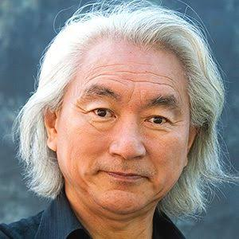

“The human brain has 100 billion neurons, each neuro is connected to 10 thousand other neurons. Sitting on your shoulders is the most complicated object in the known universe.”
Research Statement
Since my diagnosis with GBS, I’ve become fascinated by the vastly “complicated” (Kaku) human brain, and how modern technology can expand the current range of neurological treatments available. Thus, to pursue this interest, I worked under the hand of Dr. Philip Crooke, where I gained experience in applying differential equations to mathematically model the efficacy of a range of technological treatments. Therefore, in the future, I hope to use my expertise to explore how deep brain stimulation’s hormonal regulation could potentially treat drug addiction, a disease clinically affecting over 25 million people worldwide.